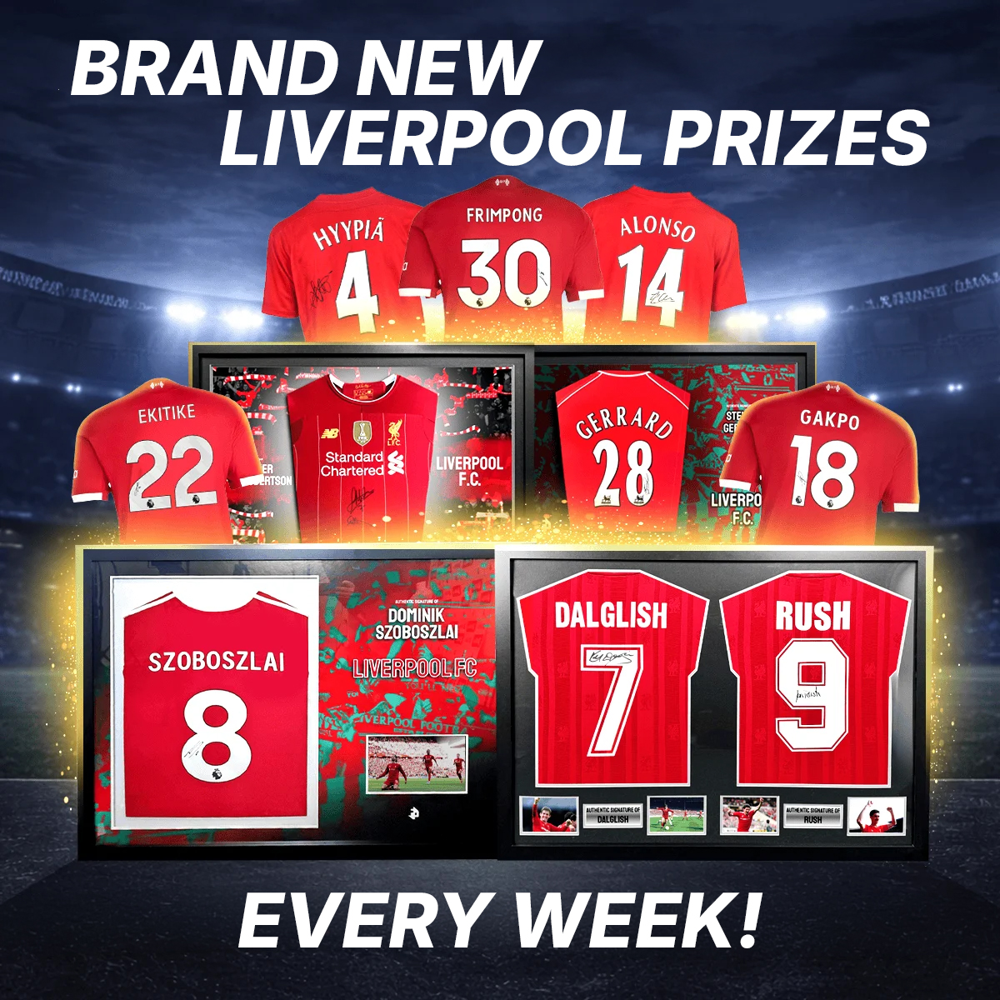

Club-Specific Creative, Turned Into New Customers
Football Prizes needed to acquire first-time customers across a wide base of football fans on Meta. Rather than running one generic ad, the campaign was structured as eleven parallel ad sets - one per club fanbase, from Liverpool and Arsenal down to smaller clubs like Nottingham - each targeted to its own audience and matched with its own creative for optimal performance.
The approachEach variant had to walk a line: club-specific enough to feel tailored, without compromising Football Prizes' own brand and colours. The hook in the first three seconds does the heavy lifting - three to four of the club's most desired signed shirts, cut in fast succession. For the Liverpool edit, that's Szoboszlai cutting straight into Steven Gerrard, arguably the club's most iconic player, then Virgil van Dijk, that season's standout performer, then a full squad shirt signed after one of the most famous Champions League finals of all time. Every shirt is a genuine want-item for that fanbase, and all of them land inside the first three seconds.
The same structure repeats across all eleven variants, which is what let one core concept scale without feeling copy-pasted. After the hook, the edit widens into everything else Football Prizes offers - hospitality tickets to the Premier League's biggest fixtures, shown through club-relevant stadium imagery (Anfield for Liverpool, Stamford Bridge for Chelsea, and so on), plus the custom-built, custom-designed frames that set Football Prizes apart from other memorabilia competitors. Each edit closes on a fully customisable end frame, leaving room to land whatever final message the campaign needed to get across to the fan base.
The resultLiverpool was the standout segment - the single largest driver of volume at 3,225 purchases and 13.6× ROAS - while the campaign as a whole has stayed live and profitable since April 2026.
One Formula, Nine Clubs
Every club ran the same four-piece formula - two images, two videos - reskinned to fit that fanbase. Switch clubs to see how one core idea flexed across audiences.